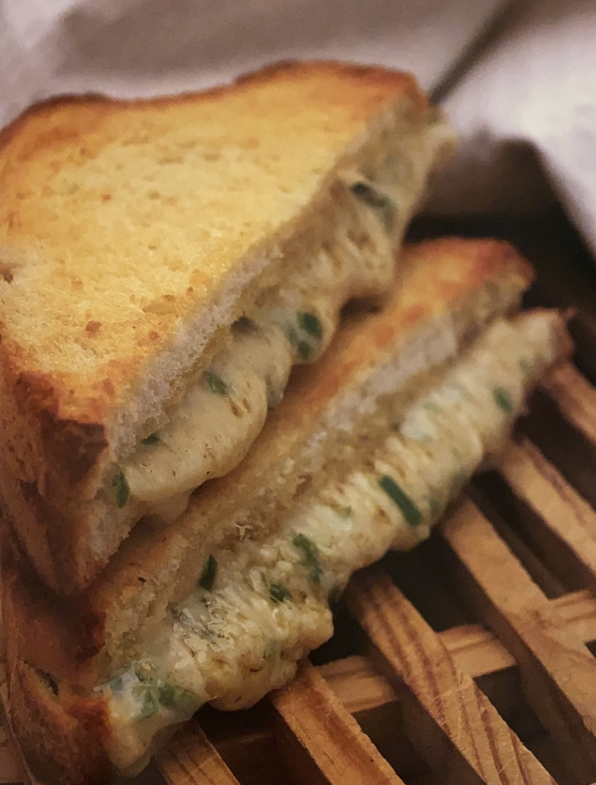

Reseptit
~ Tuhti aamiainen ~
Hedelmäinen kaurapuuro
4 annosta (15min)

Ainekset
• 225g isoja kaurahiutaleita
• 1 hyppysellinen suolaa (haluttaessa)
• 8,5dl maitoa
• 50g kuivattuja aprikooseja paloina
• 25g auringonkukkasiemeniä
• 2 banaania viipaleina
Valmistus
Sekoita kaurahiutaleet, maito ja (haluttaessa) suola kattilassa. Keitä miedolla
lämmöllä jatkuvasti hämmentäen 8-10 minuuttia, kunnes puuro sakenee.
Jaa puuro lautasille ja sirottele päälle aprikoosipalat ja auringonkukansiemenet.
Levitä banaaniviipaleet puurolle ja tarjoa.
Meloni-mansikkamysli
Valmistus
Sekoita kulhossa kaurahiutaleet, kauraleseet, mantelit ja aprikoosit.
Kuori meloni, poista siemenet ja pilko malto suupaloiksi. Halkaise isot mansikat.
Jaa hiutaleseos 2 kulhoon. Asettele pinnalle meloni ja mansikat. Kaada halutessasi
päälle joko maitoa tai appelsiinimehua.
Ainekset
• 25 g kaurahiutaleita
• 25 g kauraleseitä
• 2 rkl paahdettuja mantelilastuja
• 25 g kuivattua aprikoosia pieneksi pilkottuina
• 1/2 meloni (esim. galia)
• 250 g perattuja mansikoita
• 1,5 dl maitoa tai appelsiinimehua tarjoiluun (halutessa)
2 annosta

~ Mukaan otettavaksi ~
Paahdetut juustoleivät
4 annosta (15min)
Ainekset
• 350 g emmental- tai goudaraastetta
• 150 g pehemää voita, lisäki hiukan voiteluun
• 4 tuoretta vihreää chiliä pieneksi silputtuina, siemenet poistettuina
• 1/2 tl jauhettua juustokuminaa
• 8 paksua viipaletta paahto- tai muuta leipää
Valmistus
Esilämmitä uuni 190 asteeseen. Laita juusto ja 120 g voita kulhoon ja sekoita.
Lisää joukkoon chilit ja juustokumina ja sekoita.
Voitele leipäviipaleet toiselta puolelta lopulla voilla. Laita 4 viipaletta
voipuoli alaspäin uunipellille. Jaa juustoseos viipaleille. Laita niiden päälle
loput leipäviipaleet voideltu puoli ylöspäin ja paina tiiviiksi.
Paista esilämmitetyssä uunissa 8-10 minuuttia rapeiksi ja vaaleanruskeiksi. Tarjoa heti.
Kalkkunawrap
Valmistus
Esilämmitä uuniin grillivastus.
Sekoita isossa kulhossa huolellisesti pinaatti, paprika, porkkana ja hummus.
Sekoita sitten joukkoon kalkkuna ja auringonkukansiemenet. Suolaa ja pippuroi.
Lämmitä pitaleipää uunin ylätasolla minuutti kummaltakin puolelta, mutta älä
päästä leipää ruskistumaan. Leikkaa kahtia ja viillä puolikkaisiin taskut.
Jaa täyte pitataskuihin. Kääri folioon, jos otat leivät mukaan.
Ainekset
• 1 pieni kourallinen pikkupinaattia lingottuna ja suikaloituna
• 1/2 punainen paprika ohuina suikaleina
• 1/2 porkkana karkeasti raastettuna
• 4rkl hummusta
• 100g kypsää kalkkunaa ohuina suikaleina
1 annos (15min)

~ Nopea päivällinen ~
Makaroonilaatikko
4-6 annosta (yli 60min)

Ainekset
• 1ps(400 g) Makaroneja
• 1rs(700 g) Jauhelihaa
• 1 sipuli
• 3/4tl suolaa
• 3/4tl mustapippuria
• 1/4tl maustepippuria
• 2tl basilikaa
• 2tl timjamia
• Munamaito
• 2-3 kananmunaa
• 7dL Kevytmaitoa
• 1tl suolaa
• Pinnalle 2dl Juustoraastetta
Valmistus
Keitä makaronit pakkauksen ohjeen mukaan, noin 8 minuuttia. Valuta makaronit.
Hienonna sipuli. Ruskista jauheliha omassa rasvassaan ja lisää sipulit jauhelihan
joukkoon. Mausta seos suolalla, musta- ja maustepippurilla, basilikalla sekä timjamilla.
Kaada jauhelihaseos ja makaronit isoon voideltuun vuokaan (tilavuus noin 3 l).
Sekoita munamaidon ainekset keskenään ja kaada seos vuokaan. Kypsennä 175-asteisessa uunissa noin 45 minuuttia.
Ripottele juustoraaste vuoan pinnalle kypsymisen loppuvaiheessa.
Tonnikala-pastalaatikko
Valmistus
Esilämmitä uuni 200 asteeseen. Kiehauta kattilallinen kevyesti suolattua vettä.
Lisää pasta kattilaan ja keitä 2 minuuttia lyhyemmin kuin pakkauksessa neuvotaan.
Sulata voi kattilassa keskilämmöllä. Lisää korppujauhot kattilaan ja sekoita.
Lämmitä pitaleipää uunin ylätasolla minuutti kummaltakin puolelta, mutta älä
päästä leipää ruskistumaan. Leikkaa kahtia ja viillä puolikkaisiin taskut.
Valuta pasta ja nosta sivuun. Kaada sienikeitto pastakattilaan ja kuumenna keskilämmöllä
Lisää kattilaan maito, selleri, paprika, puolet juustosta ja kaikki persilja. Lisää
kattilaan tonnikala ja sekoita varovasti, jottei kala hiutaloidu liikaa. Mausta suolalla
ja pippurilla. Lämmitä, kunnes kattilan reunaan muodostuu pieniä kuplia. Älä kiehauta.
Lisää pasta kastikkeeseen ja sekoita. Kaada uunivuokaan ja tasoita pinta. Sekoita loppu
juusto korppujauhoihin, levitä pastan päälle ja paista 20-25 minuuttia kullanruskeaksi.
Anna jäähtyä hetki ja tarjoa suoraan vuoasta.
Ainekset
• 200 g nauhapastaa (esim. tagliatelle)
• suolaa ja pippuria
• 25 g voita
• 50 g tuoreita korppujauhoja
• 4 dl sienikeittoa tölkistä
• 1,25 dl maitoa
• 2 sellerinvartta paloina
• 1 punainen paprika
• 1 vihreä paprika
• 140 g karkeaa goudaraastetta
• 2 rkl vastapilkottua persiljaa
• 200 g öljyyn säilöttyä tonnikalaa tölkistä valutettuna ja paloiteltuna
1 annos (15min)

~ Parempaa kuin pikaruoka ~
Tuliset seesaminuudelit
4 annosta (15min)

Ainekset
• 500 g keskipaksuja aasialaisia munanuudeleita
• 3 rkl auringonkukkaöljyä
• 2 rkl seesamiöljyä
• 1 murskattu valkosipulinkynsi
• 1 rkl sileää maapähkinävoita
• 1 pieni vihreä chili oikein pieneksi pilkottuna ja siemenet poistettuina
• 3 rkl paahdettuja seesaminsiemeniä
• 4 rkl vaaleaa soijakastiketta
• 1/2 rkl limettimehua
• 4 rkl vastasilputtua korianteria
• Suolaa ja pippuria
Valmistus
Keitä nuudelit pakkauksen ohjeiden mukaan.
Tee sillä välin kastike. Laita kulhoon auringonkukkaöljy, seesamiöljy,
valkosipuli ja maapähkinävoi ja sekoita sileäksi.
Hämmennä joukkoon chili, seesaminsiemenet, soijakastike ja limettimehu.
Mausta suolalla ja pippurilla.
Valuta nuudelit ja kumoa lämmitettyyn tarjoiluastiaan.
Kaada kastike nuudelien päälle ja ripottele pinnalle silputtu korianteri.
Sekoita varovasti. Tarjoa kuumana.
Naudanlihapurilainen
Valmistus
Laita jauheliha isoon kulhoon. Murenna lihaliemikuutio ja lisää se kulhoon.
Laita kulhon sipulilastut ja vesi ja vaivaa ainekset huolellisesti yhteen.
Muotoile seoksesta 4 jauhelihapihviä.
Kuumenna parilapannu suurella teholla. Paista pihvejä kummaltakin puolelta
5 minuuttia välillä lastalla painellen. Paistoaikaa voi vaihdella pihvien
paksuudesta ja halutusta kypsyydestä riippuen.
Ripottele pihveille kääntämisen jälkeen halutessasi juustoraastetta.
Siirrä pihvit sämpylöiden alapuolikkaille ja kerrosta päälle lusikallinen
ketsuppia, tomaattiviipaleita ja salaatinlehtiä sekä päällimmäiseksi toinen
sämpylän puolikas. Tarjoa ohessa uunissa paistettuja ranskalaisia.
Ainekset
• 750g vähärasvaista naudanjauhelihaa
• 1 lihaliemikuutio
• 1rkl kuivattuja sipulilastuja
• 2rkl vettä
• 50g goudaraastetta (haluttaessa)
• 4 halkaistua hampurilaissämpylää
Tarjoiluun:
• Ketsuppia
• Tomaattiviipaleita
• Salaatinlehtiä
• Ranskanperunoita
4 annosta (60min)

~ Bravuurinumero ~
Uunibroileri
6 hengelle (2,5 tuntia)

Ainekset
• 1 broileri (noin 2kg)
• 50g voita
• 2rkl vastasilputtua sitruunatimjamia
• Suolaa ja pippuria
• 1 sitruuna neljänä lohkona
• 1,25dl valkoviiniä
• Paistettuja perunoita tarjoiluun
Valmistus
Esilämmitä uuni 220 asteeseen. Huuhtele broileri kylmällä vedellä,
painele päältä ja sisältä huolellisesti kuivaksi talouspaperilla ja
laita uunivuokaan.
Laita voi kulhoon ja survo haarukalla. Sekoita joukkoon timjami, suolaa
ja pippuria. Levitä maustevoita broilerin sisä- ja ulkopintaan ja laita
sitruunalohkot vatsaonteloon. Valele broileri viinillä.
Nosta broileri esilämmitettyyn uuniin ja paista keskitasolla 20 minuuttia.
Laske lämpö 190 asteeseen ja paista vielä 1,5 tuntia valellen tiheään.
Jos nahka tummuu liikaa, peitä broileri alumiinifoliolla. Jos vuoka kuivuu,
lisää hiukan viiniä tai vettä.
Pistä veitsellä reiden paksuimpaan kohtaan. Jos siitä valuva neste on kirkasta,
liha on kypsää. Ota vuoka uunista.
Nosta broileri vuoasta lämmitetylle lautaselle ja peitä foliolla. Anna
vetäytyä 10 minuuttia ennen viipalointia.
Tarjoa paistettujen perunoiden ja vuokaan jääneen kastikkeen kera.
Paprikagulassi
Valmistus
Kuumenna kasviöljy isossa korkeassa paistinkasarissa. Kuullota siinä sipulia
ja valkosipulia miedolla lämmöllä 3-4 minuuttia.
Lisää kasariin lihapalat ja ruskista kovalla teholla 3 minuuttia. Lisää kasariin
paprikajauhe ja sekoita. Lisää kasariin tomaatit, tomaattisose, paprika ja sienet
ja paista tiheään hämmentäen 2 minuuttia. Kaada kasariin lihaliemi ja kiehauta.
Vähennä lämpöä ja hauduta kannen alla 1,5 - 2 tuntia, kunnes liha mureutuu.
Sekoita maissijauhot ja vesi pienessä kulhossa sileäksi. Siirrä seos kasariin ja
keitä jatkuvasti hämmentäen noin minuutti, kunnes kastike sakeutuu. Mausta suolalla
ja pippurilla.
Siirrä gulassi tarjoiluastiaan, ripottele päälle persilja ja tarjoa riisin kanssa.
Ainekset
• 2 rkl kasviöljyä
• iso sipuli
• 1 murskattu valkosipulinkynsi
• 750 g vähärasvaista naudan palapaistia
• 2 rkl paprikajauhetta
• 400 g tomaattimurskaa tölkistä
• 2 rkl tomaattisosetta
• 1 iso punainen paprika pilkottuna
• 175 g pieniä herkkusieniä viipaleina
• 6 dl lihalientä
• 1 rkl maissijauhoja
• 1 rkl vettä
• suolaa ja pippuria